This portfolio examines how Yeule’s musical style has changed across their releases. Yeule is a Singaporean-born, London-based artist who has been active since around 2014, starting with quiet, atmospheric bedroom pop and gradually shifting toward a much more produced, hyperpop-influenced sound. My goal with this portfolio is to trace how much that style has changed using Spotify’s track-level features, and by going more in-depth on two specific tracks, one from their first EP and one from their latest album.
The corpus consists of 62 tracks drawn from Yeule’s full discography, covering the early EPs (Yeule, Pathos, and Coma) and their four full-length albums (Serotonin II, Glitch Princess, softscars, and Evangelic Girl is a Gun). One extreme outlier, the four-hour track “The Things They Did For Me Out of Love”, was excluded, because Spotify was unable to compute meaningful values for any of its audio features. Yeule was chosen as the subject simply because they happened to be what I was listening to at the time I needed to pick a corpus, but they turned out to be a good fit for this kind of analysis, given how dramatically their sound has shifted across releases.
Github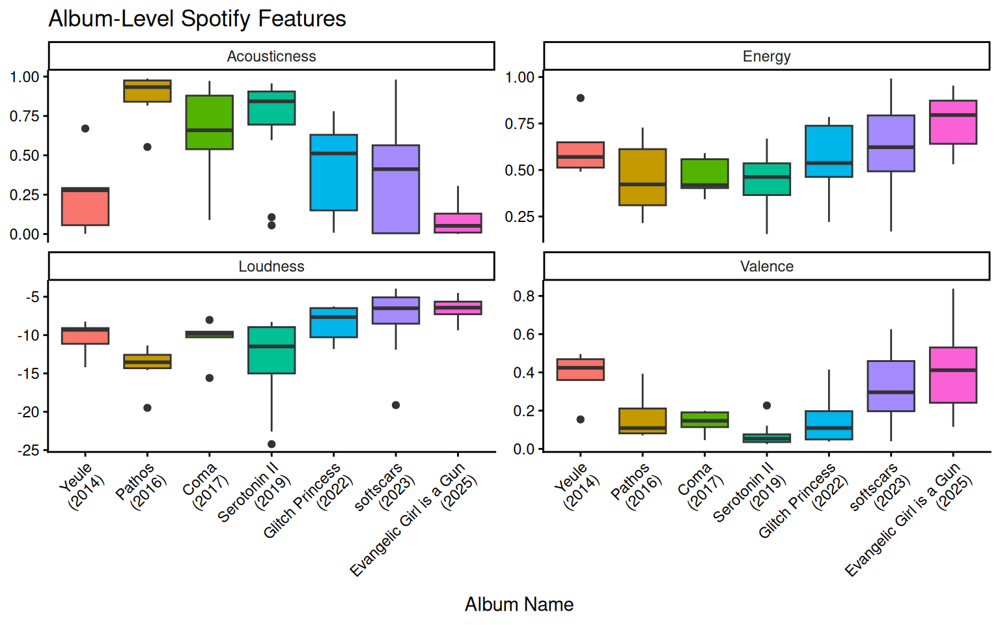
The four features shown each tell a slightly different story about how Yeule’s sound has changed over time. Acousticness shows the clearest trend, it peaks around Pathos (2016) and Serotonin II (2019), then drops sharply with softscars (2023) and hits near zero for Evangelic Girl is a Gun (2025), which matches the shift from quiet, ambient bedroom pop to a much more produced, electronic sound. Energy moves in roughly the opposite direction, staying relatively flat through the earlier EPs before climbing steadily from Glitch Princess (2022) onwards.
Valence is interesting because it does not simply trend in one direction, but has more of a U shape. It drops sharply after the debut Yeule EP and stays consistently low through the middle of the discography, Serotonin II in particular has an almost entirely compressed box near zero, before rising again in softscars and Evangelic Girl is a Gun. This suggests the more recent albums sound more “positive” to Spotify’s model, although that likely reflects the more energetic, hyperpop-influenced production instead of a real shift in emotion of the songs themselves. Loudness follows a similar trajectory compared to the energy trend, relatively flat for the first few EPs and then climbing steadily with each album.
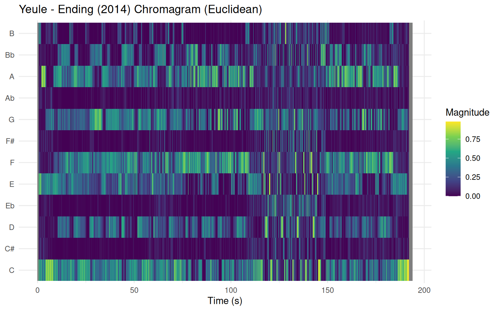
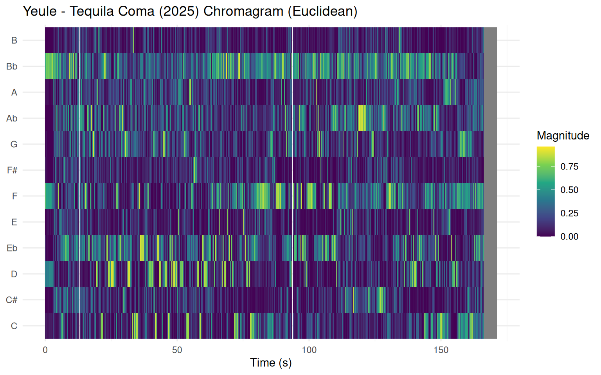
The chromagrams for “Ending” (2014) and “Tequila Coma” (2025) show quite different pitch profiles, both using Euclidean normalisation. “Ending” has a relatively consistent pattern throughout the song, with activity concentrated mostly in a handful of pitch classes, C, F, and A stand out as recurring, with the rest staying fairly dark for most of the track. Overall the pitch content stays stable and predictable, which fits with the simple, atmospheric character of the early EP.
“Tequila Coma” looks completely different, the pitch energy is spread much more broadly across all twelve pitch classes almost simultaneously, and the colours are brighter throughout. Bb is particularly active early on, but it is hard to single out a dominant pitch class for most of the song because so many are active throughout the song. There is also a noticeable shift around the 80 second mark where the pattern changes, which corresponds to a transition in the track. This kind of spread-out, dense chroma profile is expected of heavily produced electronic music, where layered effects activate many frequencies at once, making it harder to isolate a clear tonal centre compared to the less layered production of “Ending”.
| Year | Album Name | Track Name | Danceability | Energy | Acousticness | Valence | Speechiness | Instrumentalness | Liveness | Tempo |
|---|---|---|---|---|---|---|---|---|---|---|
| 2014 | Yeule | Ending | 0.65 | 0.57 | 0.67 | 0.47 | 0.04 | 0.81 | 0.07 | 116.02 |
| 2016 | Pathos | Desire | 0.36 | 0.33 | 0.95 | 0.08 | 0.03 | 0.72 | 0.11 | 126.12 |
| 2017 | Coma | I Miss You This Much | 0.15 | 0.42 | 0.66 | 0.11 | 0.04 | 0.00 | 0.10 | 75.01 |
| 2019 | Serotonin II | Your Shadow | 0.18 | 0.16 | 0.96 | 0.04 | 0.04 | 0.72 | 0.05 | 73.80 |
| 2022 | Glitch Princess | My Name is Nat Cmiel | 0.53 | 0.57 | 0.52 | 0.42 | 0.52 | 0.00 | 0.31 | 133.10 |
| 2023 | softscars | x w x | 0.39 | 0.99 | 0.00 | 0.04 | 0.24 | 0.00 | 0.28 | 138.05 |
| 2025 | Evangelic Girl is a Gun | Tequila Coma | 0.65 | 0.87 | 0.01 | 0.84 | 0.08 | 0.37 | 0.11 | 79.99 |
For selecting the tracks for more in-depth analysis, the “most average” track was calculated based on Spotify’s track-level features for each album, the results of which are visible in the table on the left. From this, “Ending” was chosen from the oldest EP (Yeule, 2014) and “Tequila Coma” from the latest album (Evangelic Girl is a Gun, 2025). The Tempo feature was normalised before the distance calculation, because unlike the other features it is not bounded between 0 and 1, which would give it disproportionate influence on the result.
Looking at the specific “most average song of the album” table as a whole, there is a pretty clear trend visible across Yeule’s discography. Acousticness drops dramatically over time, from 0.67 in the Yeule EP all the way down to 0.01 in Evangelic Girl is a Gun, while Energy moves in the opposite direction, rising from 0.57 to 0.87. This matches what you can hear in the albums themselves, earlier Yeule is quiet, acoustic, and heavily textural, while the more recent releases are loud, dense, and vocal-forward. It is worth keeping in mind that Spotify’s audio features are black-box model estimates rather than direct measurements, so the “most average” track is only as representative as those estimates are accurate.
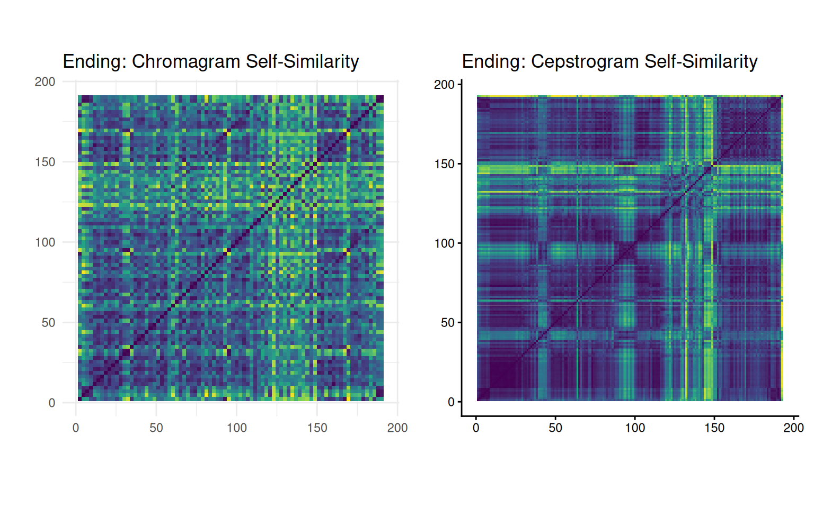
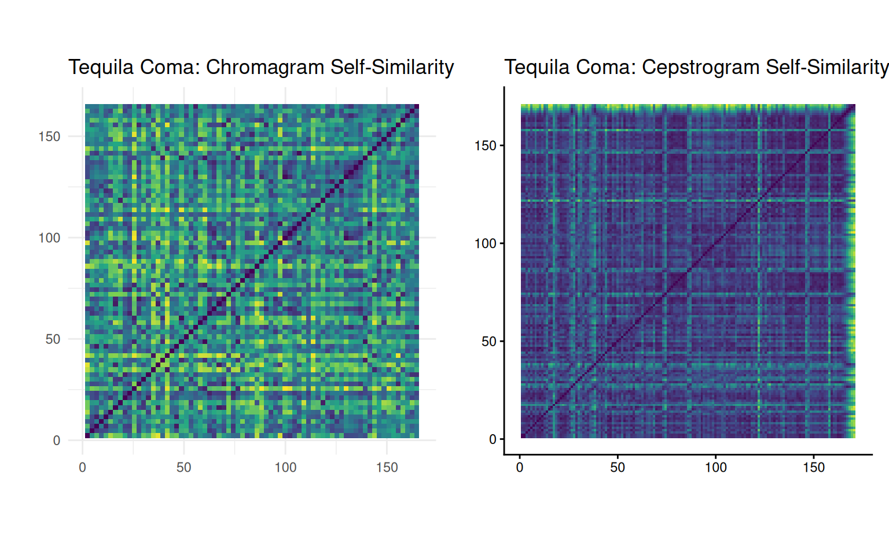
The self-similarity matrices reveal some interesting structural differences between the two tracks. In “Ending”, the chromagram self-similarity is varied, but there is visible checkerboarding in the matrix indicating sections that share similar harmonic content, but also many bright yellow lines showing moments that are harmonically quite distant from the rest of the song. This suggests the song does move through distinct harmonic areas rather than staying completely static, even if those changes are subtle. The cepstrogram tells a clearer story, with very clear checkerboarding, separated by bright horizontal and vertical lines that indicate sharp timbral transitions. This shows that there are a few distinct textural sections in the song, which is more structure than the chromagram alone would suggest.
“Tequila Coma” looks different in both matrices. The chromagram self-similarity is more varied to “Ending” with more frequent bright patches, suggesting the harmonic content shifts more rapidly and less predictably throughout the song, consistent with the dense, layered production style. The cepstrogram is far more uniform than the cepstogram of “Ending”, with a much more evenly distributed pattern and no dramatic bright lines separating large blocks. This suggests that the texture of “Tequila Coma” stays relatively consistent throughout, with gradual changes rather than clear sectional breaks, somewhat counterintuitive for a more produced track, but likely a result of the constant presence of synthesisers and drums that maintain a consistent texture across the whole song.
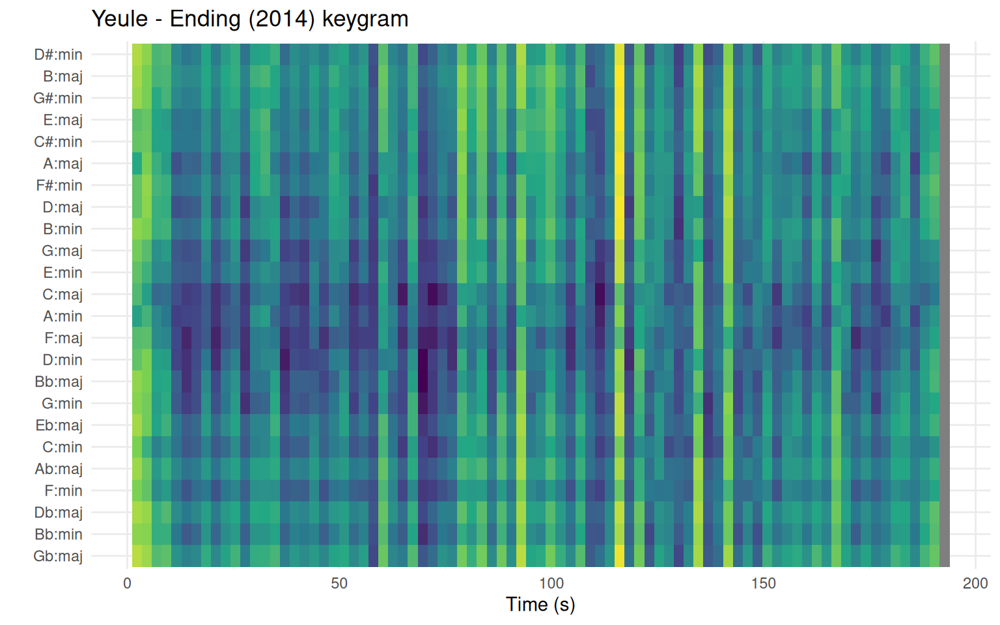
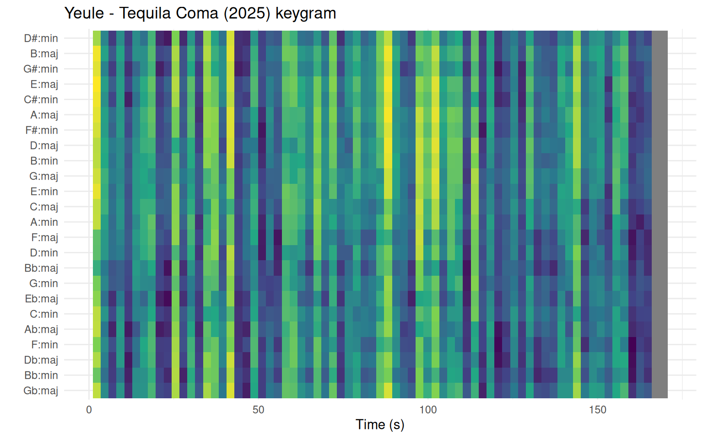
The keygrams for “Ending” (2014) and “Tequila Coma” (2025) show some clear differences between the two tracks. In “Ending”, there are stretches where a handful of keys consistently match well — C:maj, A:min, F:maj, and D:min show up as darker patches repeatedly, meaning the song stays in a recognisable key for most of its runtime, even if it shifts around a bit. The bright spikes around 110 and 130 seconds are where no key fits well at all, which likely lines up with the textural change near the end of the track that is also visible in the chromagram. “Tequila Coma” is much harder to read — dark and bright patches switch rapidly all over the place without any key standing out consistently. This means the algorithm cannot pin the song down to a clear key at any point, which makes sense given how layered and heavily processed the production is. When you stack that many synthesisers and pitch-shifted vocals on top of each other, the result is harmonically dense enough that even a key-matching algorithm cannot get a clear answer.
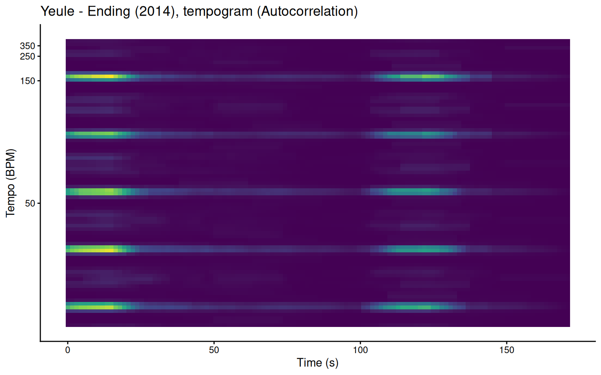
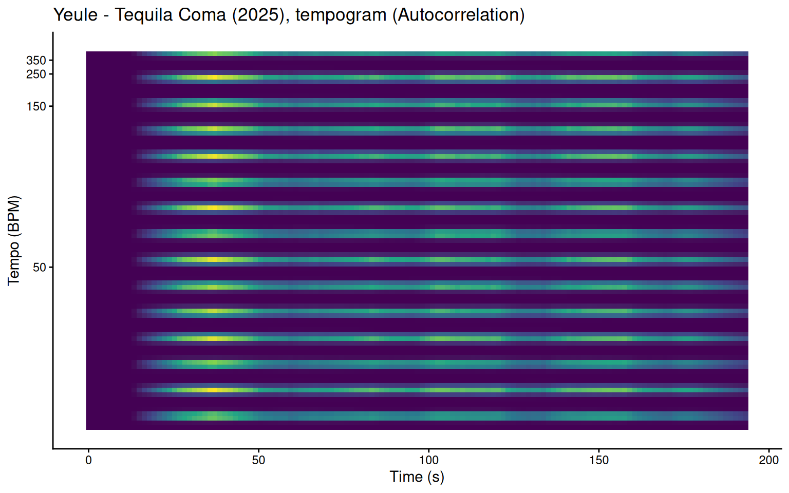
The tempograms for “Ending” and “Tequila Coma” show a a large difference in how rhythmically detectable each song is. “Ending” has an extremely weak overall signal, the tempo is only clearly visible at the very start of the song and briefly reappears around the 120 second mark, with the signal almost completely disappearing for the majority of the track. There are a few harmonic multiples visible, but none of them are particularly strong after the start of the song. This suggests that “Ending” does not have a consistent enough rhythmic pulse for the autocorrelation tempogram to latch onto, which matches its ambient, largely percussionless character.
“Tequila Coma” is the opposite. The autocorrelation tempogram is filled with evenly spaced horizontal bands running consistently from start to finish, when a beat is this regular, the algorithm picks up the fundamental tempo and all its multiples and subdivisions at once. The signal stays completely stable for the entire song, reflecting how stable the tempo is through the entire song.
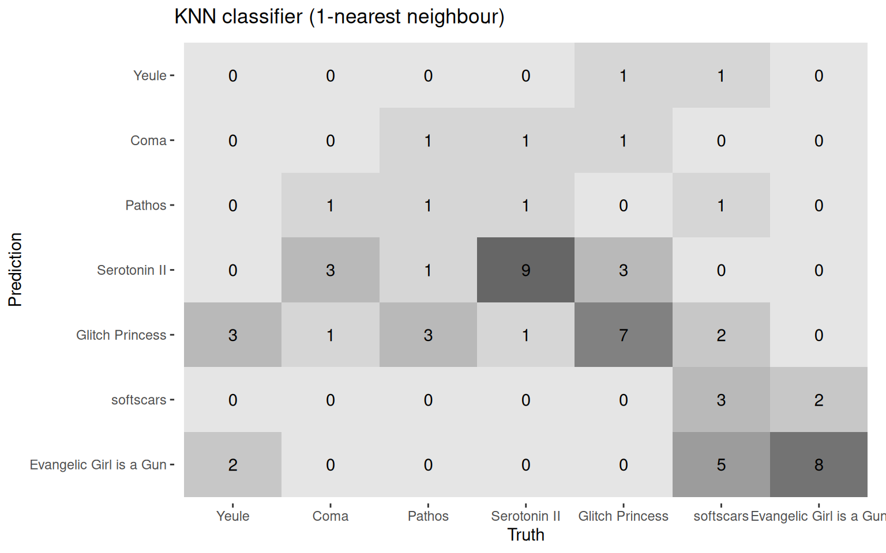
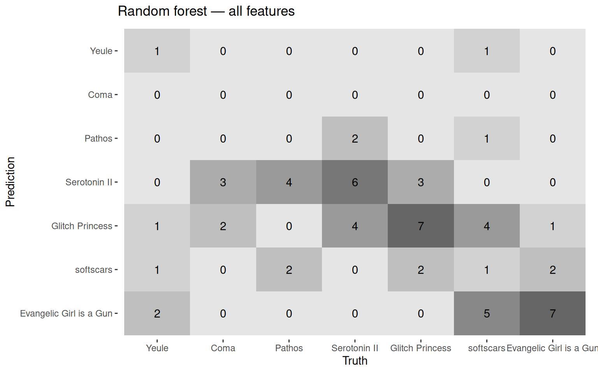
Two classifiers were trained to predict which album a track belongs to, a 1-nearest neighbour KNN and a random forest classifier, both evaluated with 5-fold cross-validation. Looking at the confusion matrices, the results are quite consistent between the two models, which itself suggests the features have a real but limited signal. The most important features selected are Valence, Loudness, Danceability, and Acousticness.
The later albums are clearly easier for both models to identify. “Serotonin II” and “Glitch Princess” both classify well, with the KNN correctly identifying 8 and 7 tracks respectively. “Evangelic Girl is a Gun” also performs consistently across both models with 6-7 correct, and “softscars” also does quite well in the KNN with 5 correct, though the random forest struggles with it more. This makes sense given how sonically distinctive the later albums are, the extreme drop in acousticness and spike in energy gives the models something clear to work with.
The early albums are where both models fall apart. Coma gets 0 correct predictions in both, and the debut Yeule EP fares barely better, with its tracks scattered across other predictions. Pathos does reasonably well in the KNN with 4 correct, but collapses to just 1 in the random forest, where it mostly gets absorbed into Serotonin II predictions. This is not surprising, the earlier EPs have fewer tracks, which means the models have less training data to learn what makes each one distinct, and on top of that they all occupy a very similar acoustic, low-energy, low-valence space in the feature representation, making them hard to tell apart even with sufficient data. “Softscars” is an interesting case: the random forest almost entirely misclassifies it as either “Glitch Princess” or “Evangelic Girl is a Gun”, suggesting its sound profile sits closer is similar to both of them, which shows that it was an album where Yeule started changing their style.
The analyses across this portfolio show that Spotify’s track-level features do a reasonable job of capturing the broad arc of Yeule’s stylistic evolution, the collapse in acousticness and rise in energy across releases is consistent and measurable, and the classifiers confirm that the later albums are distinct enough to be identified computationally. At the same time, the earlier albums are almost impossible to tell apart using these features alone, which suggests that the early discography occupies a much more similar sound than the later work, even if the individual songs feel different to a human listener. The deeper analyses reinforce this, the shift from unmetered, tonally ambiguous music in “Ending” to the rigidly quantised, densely layered production of “Tequila Coma” is visible not just in broad Spotify features but in the rhythmic and harmonic structure of the tracks themselves.
In terms of who could benefit from this kind of analysis, music journalists or critics writing about Yeule’s development could use it to put concrete numbers behind observations that are usually described only in vague, subjective terms. More broadly, it shows both the potential and the limits of using computational features to analyse an artist, they are good at capturing large-scale shifts, but miss a lot of the nuance that makes the earlier albums feel distinct despite looking similar on paper.